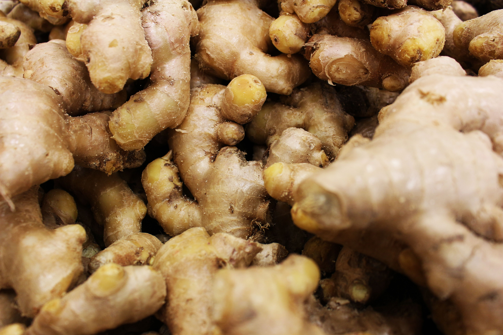
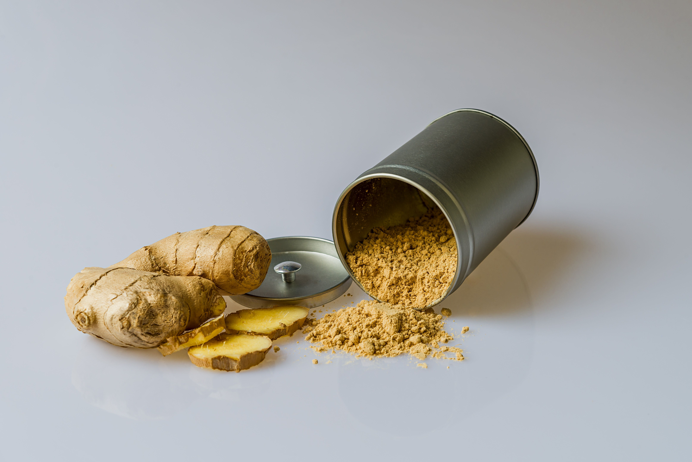
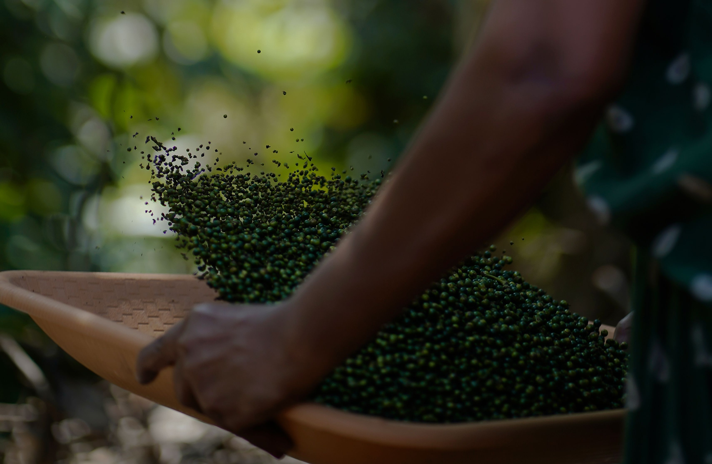
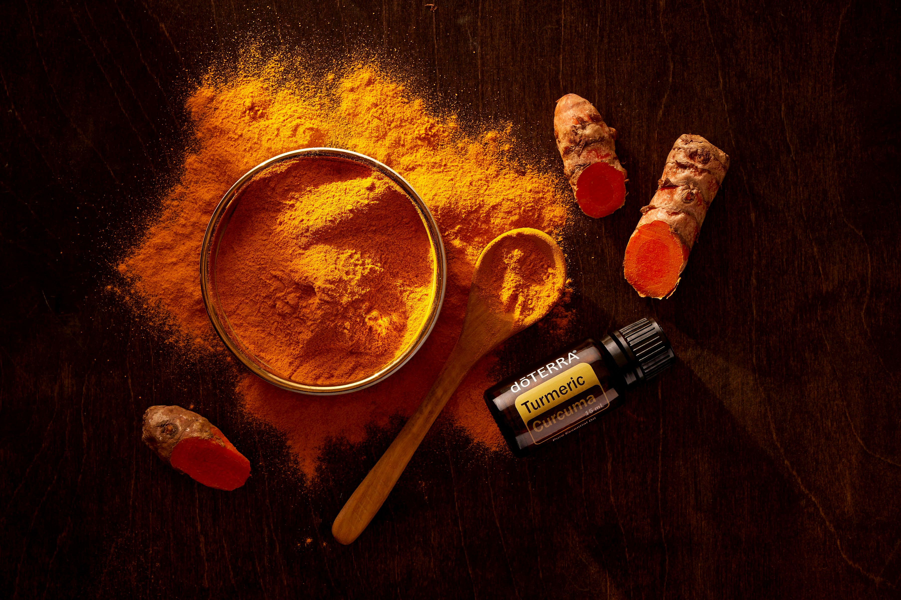
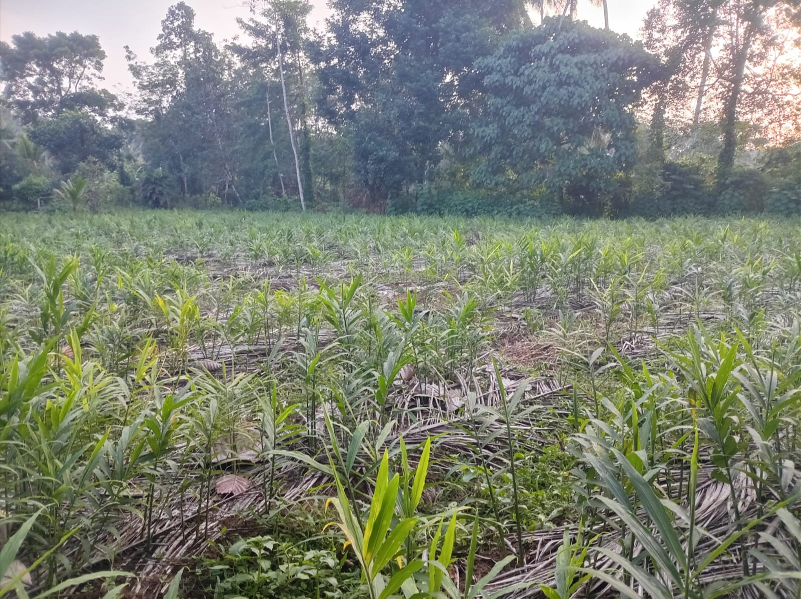
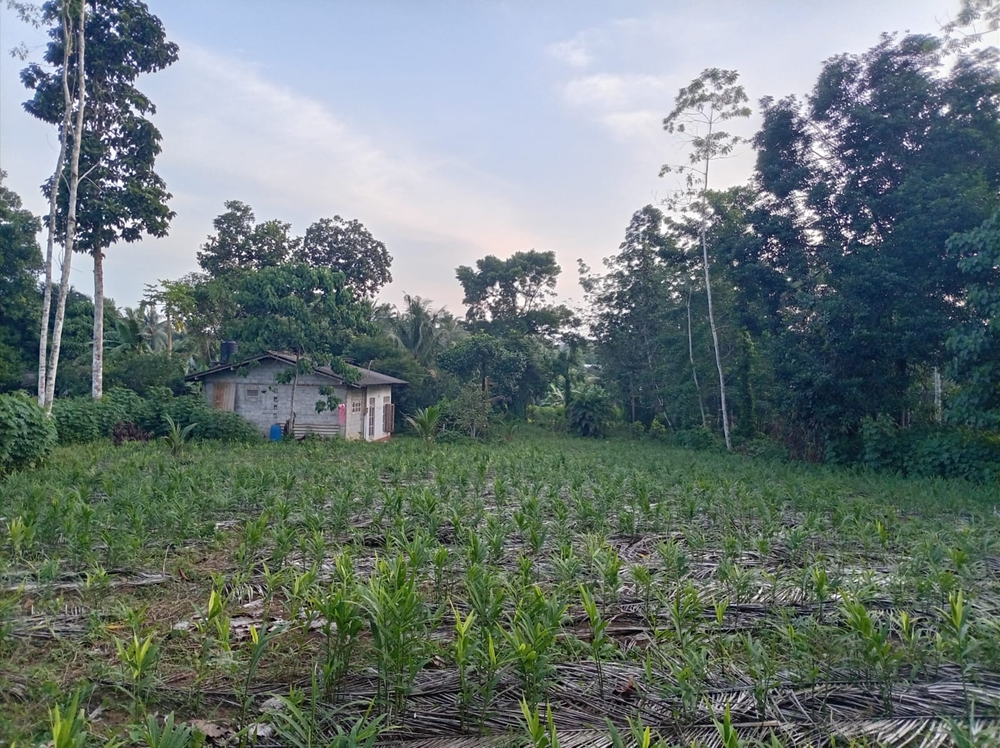

.jpg)



Ginger is an important spice crop grown in many tropical and subtropical regions of the world. It is produced by planting pieces of underground stems called rhizomes in well-drained, fertile soil with adequate rainfall or irrigation.

Black pepper is a valuable spice crop grown mainly in warm, humid tropical regions. It is cultivated from vine cuttings and grows best in fertile, well-drained soil with support trees or trellises. Major producers include Vietnam, Brazil, India, and Indonesia. Pepper spikes are harvested when the berries begin to mature, then dried to produce black pepper or processed further to make white pepper and other pepper products.

Turmeric is an important spice and medicinal crop cultivated in tropical and subtropical regions. It is grown from rhizomes in fertile, well-drained soil with adequate rainfall or irrigation. The crop typically matures in 7–10 months, after which the rhizomes are harvested, cleaned, boiled or steamed, dried, and polished before being sold. Major producers include India, Bangladesh, China, and Myanmar, where turmeric is widely used as a spice, natural colorant, and medicinal ingredient.
We get land on rent to grow crops. Below you can see such a land that is growing Ginger.


If you are like to rent your land like this we are almost ready to draw
and give a reasonabel fee to you.
cotact-us:+94778121911

Buy and Sell spices
To buy prducts from us or to sell spices to us you can contact with our products part.
products